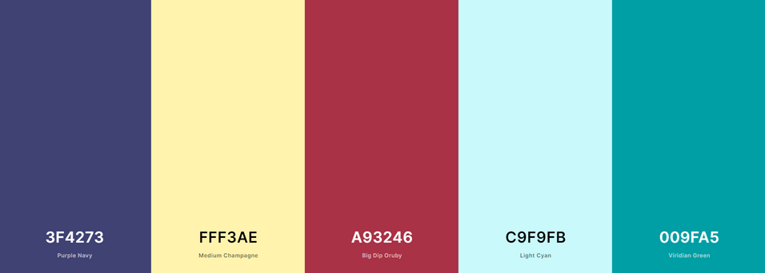
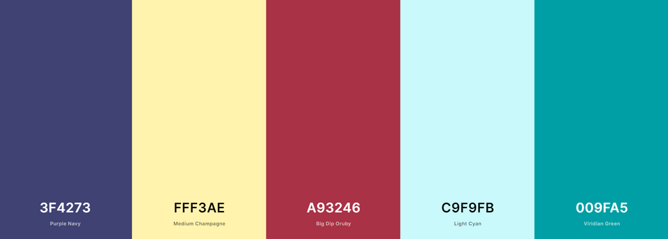

Color Scheme
The colors I will be using for this website will be similar to the colors that are found in the site logo shown here, as well as black and white.

The colors I will be using for this website will be similar to the colors that are found in the site logo shown here, as well as black and white.
